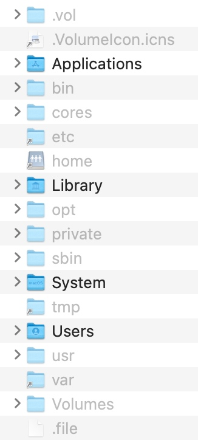
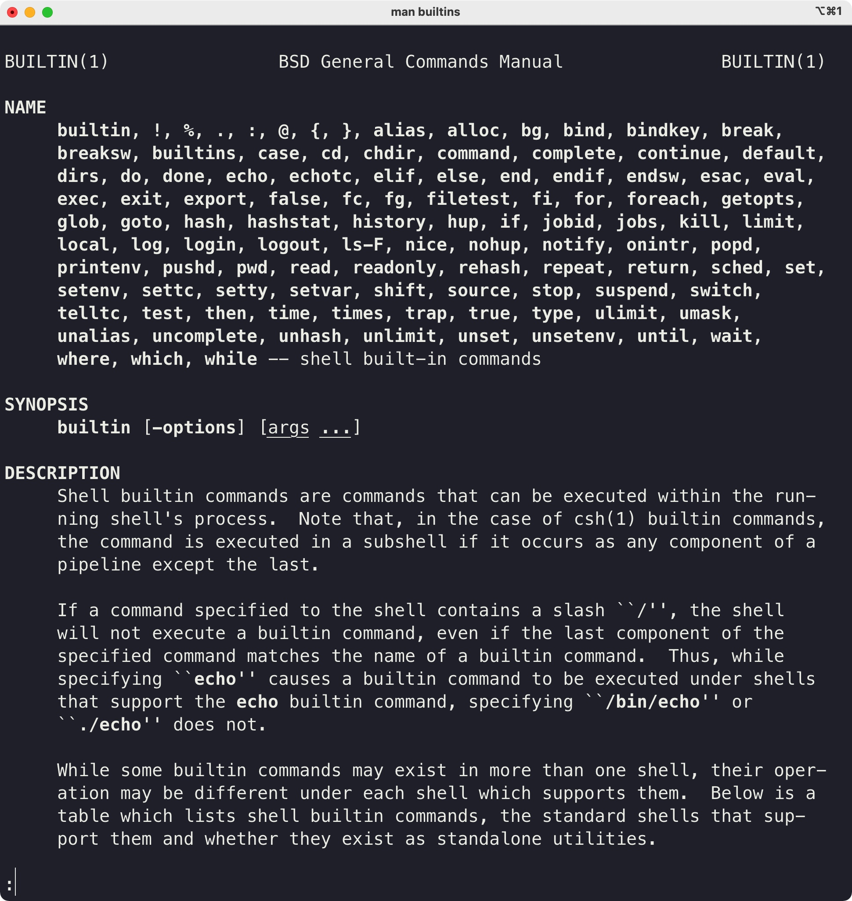

VSCode_Cpp_macOS
test
1 前言 and 课程说明
前言
大家好，我是杨希杰。今天给大家带来的是在mac上用VSCode写C++代码的教程
背景
不少工科的同学进入大一 会学习程序设计，最开始接触的语言一般都是C/C++
不过呢，老师往往会以windows系统为例说明如何写代码（毕竟目前使用mac的用户是小群体），这对使用苹果电脑也就是mac的同学是不很友好的
而且有些老师在编程环境的配置、编辑器的选取上也会有一些忽略，这部分的内容往往让同学们自学；而网上的博客或教程良莠不齐，好不容易找到能用的配置，也只是复制粘贴不知道里面写了什么
更何况有些同学拿着mac但是完全是个电脑小白，甚至连苹果电脑的基本操作都不太熟悉
这时要开始编程真是难上加难
我的情况
对，以上情况说的就是我。我在高考之前几乎没有怎么用过电脑，就是说连windows电脑都不怎么会用。大一开始程设课老师完全没有提过mac的事情，推荐我们用windows平台的Visual Studio很老的一个版本进行编程学习。我当时安装了虚拟机，因为存储原因又换了Visual Studio Code，配置文件让我头大。学了一年共5学分的程设课之后，直到20年的暑假，也就是我大一的暑假，我加入科协软件部，参加了一些额外的培训之后，我才发现，编程环境这件事情，没有那么困难。
我逐渐发现，只要清楚原理，从最基础的开始了解，在mac上用VSCode编程是一件轻松愉快的事情，而我一直都在走弯路。抱着不希望学弟学妹绕弯路的想法，我计划出一份在mac上用VSCode写优雅的写C++代码的教程。
课程目标
我希望我的课程能达到：让刚刚入学的使用mac学习C++编程的同学看到之后，能够快速上手VSCode愉快轻松地开始程序设计课的学习 或者说：如果一年前的我看到这次制作的教程，能让我少一年在程设上的迷茫。
课程简介
- 我将从mac的文件系统讲起，提及程序、可执行文件的概念，从零开始使用终端命令加深对程序的理解；
- 在大家有了对程序的理解和基本终端操作的技能之后，我会开始编写简单的C++代码，并演示如何将其编译为可执行文件/程序；
- 进而引入mac端轻量的编辑器VSCode，整合之前所讲的文件系统/文件目录、终端使用、编程与代码编译的过程
- 进一步引入VSCode的插件（Code Runner）以及VSCode的配置文件（settings.json）快速编译和执行代码文件（.cpp）
- 插入介绍VSCode的一些便捷操作
- 介绍VSCode的调试/debug功能
辅助操作
介绍我的电脑情况。这是一台全新的MacBook Pro，搭载Big Sur最新11.1的macOS、也就是苹果电脑操作系统。
至于为什么要用一台全新的电脑，这是因为自己的电脑用了一年多，和你手上的电脑会有很多有差别的地方。至少用一台新的电脑会尽可能地消除这些差异吧。
至于我从哪里来的一台全新的MacBook Pro，emmm，并不是买的，是在外置SSD中另装的系统。如果你不知道可以这么搞，那你就当我没说过，认为这是一台刚买的mbp就好了。
在我录制教程的时候，我会使用一些快捷键。因此我需要先安装一个能让大家看到我键盘都按了些什么键的应用程序。
安装KeyCastr.app，调整大小。
总结
我的课程会从最基础的开始讲，因此花费的时间会很长。但是相信我，跟着这份教程走下去，你会获得对mac、对macOS、对程序编译、运行、调试等一系列繁琐事情的清晰认识。好了，前面要说的话就这么多，让我们开始。
下面是第一节课，认识mac的文件系统
Tips
如果在接下来看课程的过程中对mac的一些操作有不理解或不熟悉的地方，可以看看B站up主Mac云课堂制作上传的超良心mac教程，可能看了那些视频你会发现mac就是你手边的生产力。
2 认识mac的文件系统
文件是什么呢？（展示下载文件夹中的图片，视频，txt，word等）
就是存储在硬盘里面的一些东西
如何更方便的看到这些文件从而对文件系统有一个更清晰的认识呢？
首先我们需要对mac的文件管理器——访达进行一些设置
对访达进行设置
打开Show all filename extensions（举例）
打开Hard disks从而看到挂载的磁盘（看一下）
打开你的家目录（一个房子的图标，我的是yangxijie）从而看到家目录
继续调整访达

⌘2 按照列表查看
⌥⌘S 打开边栏
⌥⌘T 打开工具栏
⌥⌘P 打开显示路径
⌘/ 打开状态栏
观察根目录
什么是根目录？所有的文件和文件夹都存在根目录下。这里根目录就是你的内置硬盘
调整上面的显示项目

（分别解释每个文件夹的用处）
Applications：你安装的应用程序都在这个文件夹
Library：用来存应用程序的一些数据。比如微信的聊天记录就在这个里面哦
System：一些系统（macOS）的文件，没事儿别乱碰就好了
User：（打开系统偏好设置，查看用户）个人的文件就在这里
隐藏文件
显示隐藏文件：⇧⌘.

点开头的文件夹和文件会被隐藏。这是因为有些文件可能比较繁琐或者对用户来说完全没有用处，或者可能对其进行操作比较危险，所以创建这个文件/文件夹的时候就带上了.将其隐藏不让用户看到。
但是也有一些不是点开头的文件或者文件夹被隐藏。那么为什么这些文件会被隐藏呢？因为系统不希望一般的使用者碰这些文件。因为可能你随手删掉一个系统就崩了。emmm，崩了就是说，电脑死机或者坏掉什么的。所以不要随便乱动。
不过我们待会儿要用，所以就简单看看吧。
主要是/bin目录。存放系统关键的二进制文件（什么是二进制文件我下节课会讲）（大家记住这里有个date就好了）
观察家目录

其实你的边栏（打开访达设置）显示的就是这里的文件夹（没什么神秘的，与别的文件夹没有任何区别）
路径
根目录/ == Macintosh HD
家目录~ == /Users/yangxijie（你的用户名）
树状分级
（试着写出路径）
文件名后缀的说明
文件名后缀是文件名的一部分
文件名后缀只是为了告诉系统该程序默认由哪个应用程序来打开（txt 文本编辑，jpg 预览，mp4 QuickTime Player）
你也可以不写后缀，但是这样系统就不知道要用哪些程序去打开/要如何打开。所以一定要写好后缀哦（但是后面会说到两种文件：二进制可执行文件和文本文件一般是不写后缀名的）
3 认识程序
二进制可执行文件和文本文件
这两种文件可以说是文件系统最基本的两种文件了
它们有什么不同呢？
计算机存储，本质都是0和1存储。我们先说文本文件吧：
文本文件：存的是字符，一个接一个的字符。每个字符都有一串0、1构成的编码。打开文本文件的时候，系统将这些编码挨个读出来就成为了文本文件。
什么是程序/二进制可执行文件
1 从汉语的概念来说：程序就是按照一定过程执行的东西
2 从用户使用/程序自身的性质的角度来说：（我的理解）input输入，output输出。在计算机里面：有输入、有输出就算程序。 参数是特殊的输入
执行某种操作是特殊的输出
举例子：（先说一下输入与输出的特点）
大家经常使用的可能是有图形界面的应用程序，也就是在应用程序文件夹中的后缀为.app的程序。我们先从这些大家熟悉的app入手，之后再说大家可能很少接触的二进制可执行文件

以备忘录为例：
键盘敲了一些字，屏幕上就显示了一行字（输入：敲键盘；输出：备忘录中多了一行字）
鼠标点击，在光标移动（输入：鼠标点击；输出：光标移动）
右键点击，出现辅助菜单（输入：带参数⌃的鼠标点击；输出：出现菜单）
点击新建一个列表，计算机就执行了新建一个列表的操作，新建了一个列表（输入：点击某个按钮/图标；输出：执行某个操作）
段落总结
我们简单总结一下：从使用的角度来看，有输入有输出就可以算作是一个程序。大家日常接触的就是在应用程序文件夹中的程序。输入会有普通的输入（点击），也有带参数的输入（右键，⌃点击）；输出有普通的输出（出现了一行字，显示了什么画面），也有特殊的输出——执行了某种操作
接下来我们要认识一些大家平常很少见的程序：二进制可执行文件。
3 从计算机底层的角度来说：程序就是一堆机器码（0、1），就是二进制可执行文件，计算机底层硬件（处理器）可以读取这些机器码然后实现相应的计算/进行相应的处理
引入终端
要跟这些程序/二进制可执行文件打交道，我们首先需要入门一下终端.app。从启动台打开（相当于在访达中找到终端.app然后双击打开）。
终端也是程序（接受你的字符串（命令）为输入，也会有一些输出），我们通过终端与一些没有图形界面的程序进行交互。
但是具体来说，终端提供的是一个输入命令（字符串）和输出提示（字符串）的环境，而shell则负责解析从终端输入的命令。
在计算机科学中，shell俗称壳（用来区别于核），是指“为使用者提供操作界面”的软件（命令解析器）。
它接收用户命令，然后调用相应的应用程序。
这一小节的标题是引入终端，我们这节课只是带大家初步认识终端，下节课我们会对终端和shell做更深入的了解
“它（shell）接收用户命令，然后调用相应的应用程序。”我们接下来就用终端通过shell调用一些没有图形界面的程序（二进制可执行文件），看看它们的输入输出都是什么
自己写的say_hello
（⌘I/空格看到图标上的exec）
（如何告诉shell我们要调用这个程序呢？写出它的路径就好了）
复制路径：右键，⌥；⌥⌘C；拖动到终端
（直观输入+直观输出：字符串）
/bin/date
显示日期
/bin/date
/bin/date "+DATE: %Y-%m-%d%nTIME: %H:%M:%S"
（直观输出，没有输入）
（添加参数）

/bin/mkdir
创建文件夹
接收一个参数/输入：将这个文件夹创建在哪里
在桌面创建newFolder
输出：执行了创建文件夹的操作
附
本节课所用可执行文件say_hello的C++代码文件
#include <cstdio>
int main() {
char name[100];
printf("Please input your name: ");
scanf("%s", name);
printf("Hello, %s", name);
}
4 认识终端和shell
- 4 认识终端和shell
上节课我们已经打开了终端。这节课我们要深入认识终端。
先简单回顾一下：
终端提供的是一个输入命令（字符串）和输出提示（字符串）的环境，而shell则负责解析从终端输入的命令。
内建程序与内建命令
我们打开终端，这时其实相当于打开了shell。上节课我们通过shell运行了一些程序（say_hello /bin/date /bin/mkdir）。其实shell自身也带着一些程序（二进制可执行文件），这些程序就叫内建程序。
shell内建程序的独特之处是，我们在调用这些程序的时候只需要敲一个单词就行了。一个单词，很短，所以我们就把它们称作内建命令。
顺带一提，系统自带的那些程序如果也能用一个单词就调用那么也可以称它们为系统命令。
内建命令有很多，我们只介绍一些比较重要的：which echo history pwd cd
与路径无关
which
查看shell如何解释后面的命令
which which
which echo
which history
which pwd
which cd
得到结果：which: shell built-in command
echo
将后面输入的东西返回。看起来很没用，但是在显示变量的时候会显示变量的值而不是那个字符串
echo hello
echo $SHELL
查看正在使用的shell echo $SHELL。其实还有好多其他的shell，但是我们用macOS默认的shell——zsh就好了。（小知识：在10.15Catalina之前macOS默认的shell是bash，其实二者的区别并不大，都可以解析你输入的命令）
history
history
history -5
date
接下来我们尝试一下which date。
发现shell返回了/bin/date！回顾which的作用，which会查看后面输入的东西作为命令如何被shell解析。也就是说，如果你在shell输入date，相当于输入/bin/date。那么我们要看时间怎么看啊，直接输入date，shell就会帮我解析这个单词，然后去调用在文件系统中的/bin/date这一个二进制程序，执行这个程序，然后返回当前的时间。
然后我们灵光一现，那是不是很多系统命令都可以用一个单词调用呢？
是这样的，我举一个例子。which mkdir，发现也是返回我们之前用的/bin/mkdir。那么我们以后用mkdir的时候是不是就不用写路径了，直接写单词就OK。
说明
既然不论是内建命令还是系统命令，都可以用一个单词替代，那么我们之后就不要太区分它们啦，反正都是命令，都是用一个单词告诉shell要调用哪个程序，本质上是一样的。
注：为什么会这样呢？调用程序写完整路径可以调用，但是一个单词给shell shell就能知道这个程序在哪里？好奇怪啊。原因我会在这节课的最后讲环境变量的时候提及。现在先认为这就是shell的功能好了。
与shell当前工作目录相关
刚刚我们讲内建命令的时候还说了两个命令，pwd和cd。但是刚刚插着讲了shell的一些常用命令于是就跳过了。接下来我们来讲这些命令。
接下来讲的命令的一些不同是命令的输入和执行或多或少会依赖shell的当前工作目录，与文件的路径相关。
pwd
接下来开始介绍文件路径——绝对路径和相对路径
我们之前所说的路径都是绝对路径，也就是从根目录开始。但其实还有相对路径。
pwd
开始介绍shell的当前工作路径
. .. ... - ~
小问题：~/Desktop是相对路径还是绝对路径？（A：绝对路径。因为~和/User/yangxijie是等价的）
（好的习惯是目录后面再加一个斜杠，而文件后面不加（我因为这个吃过亏，但还是懒得改））
cd
跳转shell的当前工作目录到指定的目录
这时我们就可以来验证上面学到的相对路径了
不过我们先试试绝对路径。再来相对路径
（查看命令前面的符号）
之前的程序/Users/yangxijie/Desktop/teaching_materials/say_hello，直接输入say_helloshell会告诉你它不认识这个单词，不认识这个命令
但是要调用这样的程序未免也太长了吧，我们能不能简化一些？
先cd到/Users/yangxijie/Desktop这时里面会有一个可执行文件
直观的想法是say_hello
但是进入目录后直接输入字符串zsh会把这个当作一条命令然后它发现并没有找到这个命令（当然了say_hello不是shell的内建命令环境变量里面也没有它所以当然出现下面的提示了zsh: command not found: say_hello
怎么让shell知道输入的say_hello不是命令而是我们想要执行的程序呢？我们输入./say_hello就好了。相当于写了一个绝对路径对吧（.相当于pwd带入）
总结
以上我们主要学习了两种内建命令：一种与文件系统/路径无关，一种与文件系统/路径有关。但是之后我们也不会去区分这两种命令了。
也就是说，之后命令就是命令，不管那是内建的还是系统的、也不管它和文件系统、路径是否沾边。
之前这么讲是希望大家能有一个较为清晰的思路认识这些命令、认识shell解析命令与执行程序的关系。但是之后在敲命令的不用太过考虑这些东西，命令就是命令，就只是一个单词、只是一句话而已。
shell常用命令
接下来我们还会再介绍一些shell常用的命令和操作。 （参考2020年清华大学电子系科协暑培｜Linux）
ls
列出当前文件夹下的所有文件
ls
ls -a
ls -l
cat
cat hello.txt
clear
清空终端中存在的已经执行过的命令
（history仍然可以查看）
mkdir
在当前目录下创建文件夹
touch
在当前目录下创建文件（一般这么创建的文件是文本文件）
rm
移除某个文件（注意不是移动到废纸篓，而是直接抹掉，就 没了）
移除某个文件夹rm -d testDirectory
强制删除rm -rf testDirectory（使用一定慎重！！！）
mv/cp
移动文件与复制文件
移动文件到原地相当于重命名
open
open foo.md
open -a Visual\ Studio\ Code.app foo.md
man
以date为例
（有的没有）
--help（但是有的也没有）
shell常用的操作
输出流重定向
还记得echo吗？
touch my.txt
echo "hello world" > my.txt
echo "hhhh" > my.txt
echo "hahahaha" >> my.txt
管道
上一个命令（程序）的输出作为下一个命令的输入
比如我想看看我刚刚创建了什么文件夹来着：我可以一条一条翻，但是我也可以搜索啊！
history
history | grep "mkdir"
⌃C
空格
举例：创建一个含有空格的文件夹，结果发现创建了两个
加入\或""
终端进阶与常用的终端操作
如果大家想对终端、shell、命令行深入了解，可以查看下面的课程：
这是对我帮助很大的一门课程
计算机教育中缺失的一课 The Missing Semester of Your CS Education 中文版
where
where也是一个shell内建命令。where和which的功能差不多，也是告诉我们一个命令如何被shell解析。区别是，shell能够告诉我们shell去解析这个命令的全部可能性。
where which
我们可以看到，其实在shell输入命令which的时候，shell觉得：啊，这个单词有两种方法可以被我解析：第一种是我自己带的内建程序；第二种是系统自带的程序；不过我自己用我自己自带的程序效率更快，毕竟是我自己的东西，所以就用自己的喽。其实，我感觉which就是where的第一行，对吧。
vim极简入门（只要能写东西进去就好了）
（编辑一个文本为例）
推出插入模式并保存退出：⎋ 冒号 wq 回车
⌃D
（bash举例）
chmod
修改文件权限。
如果你希望一个文件有可执行权限：
chmod a+x <file>
（没有深入）
回顾
如果要总结这节课所学的终端、shell与之前课程的联系，那就是把之前很长的命令给简化了。原本调用程序的过程我都扔给shell去做，我敲命令告诉shell干什么就ok了。
比如：
简化前面的命令 之 创建文件夹
/bin/mkdir /Users/yangxijie/Desktop/newFolder这样我们可以先cd过去
前面省略程序路径是因为shell知道你那个单词代表路径为/bin/mkdir的程序，所以我们省略交给shell一个单词就好。
后面为什么可以省略呢？那是因为shell有一个叫当前工作目录的东西，因此很多绝对路径可以用相对路径来代替。我们可以先cd到需要建目录的地方然后敲mkdir newFolder
简化前面的命令 之 执行自己写的程序
之前说shell内建的程序和系统的大多数二进制程序都可以通过命令让shell帮我们执行。但是自己写的程序shell是不认识的
但是你仍然可以切换到相应的目录，然后用./<your_execFile>
补充：环境变量
引言
我们之前采用了几种方法来简化终端敲命令的长度：
最开始说的是：shell认识你给它的命令（单词），所以它就帮你用这个命令（单词）找到你需要执行的程序，然后执行这个程序
后来还讲过一种：因为shell自身有一个当前工作目录，所以关于路径的东西都可以写相对路径。通过cd命令cd到某个目录之后，接下来需要路径的命令都可以省略掉绝对路径而使用相对路径。
第二种的原理已经很清楚。但是，第一种，也就是最先说的那一种，shell是怎么认识我们给它的单词呢？？？
接下来我们简单说一下这个事情。
环境变量
查看环境变量
echo $PATH
其中冒号是分隔符。当你给shell扔了一个命令之后，shell先在自己的内建程序中找有没有这个单词，没找到再到环境变量去找。 （回顾where）
为什么要用环境变量呢？
因为一个相同的程序，在不同的计算机上可能安装在不同的位置。
比如我写了一个python脚本，在脚本的第一行指出了我电脑里面的python路径。然后你看了这个脚本，觉得挺好用的，我就复制了一份给你。结果你的电脑上python并没有装在那里，那不就凉了吗？你执行这个我写的脚本的时候系统就找不到python的解释器于是无法运行这段脚本。
补充：添加环境变量
添加环境变量等（大家可以自己去了解一下，自己写的程序可以这么搞，但一般都不这么搞。不过你要是下个python解释器，这个时候你就要给python的解释器添加环境变量了，因为很多别的软件都会用到python，这些软件希望它们用一个单词python就能找到python的解释器。（在macOS上这件事情交给brew去做，不用你手动添加；但是Windows上可能你就要手动添加环境变量了））
其他的工具
shell脚本 - 组合你的命令
shell脚本（以我写的处理视频的脚本为例：脚本是一段代码，组合了很多命令mkv2mp4_fcp）
homebrew - macOS快速安装命令行程序
homebrew（在哪里下载图形化界面的程序？App Store。那么在哪里下载命令行程序呢？当然是…Homebrew。就是一个名字。我们可以通过Homebrew来安装各种命令行工具并进行使用（补充：brew也可以用来安装一些图形化工具）brew官网）如果有机会我会出后续的教程
zsh配置文件
~/.zshrc
配置终端 - 打造舒适终端
终端配置(（拿我自己的电脑说一下事儿）（给出链接大家自己想配可以配置一下）如何配置很漂亮的终端）

可以参考：
如果有机会我会出后续的教程
用户与群组
用户yxj和sudo root（whoami who等（系统偏好设置的切换用户（不过看我视频教程的人应该都是用自己的mac，所以不会牵扯到这个问题。如果你是linux服务器管理员，那么可能要设置多个用户了。））
查看所有的shell内建命令
man builtins可以查看shell的所有内建命令

man zshbuiltins可以查看到zsh的所有内建命令。（也可以先man zsh，然后在下方找到这个zshbuiltins）
结束
大家估计听完这四节课都着急了，怎么还没见到VSCode的影子呢？
别急，现在你已经有了足够的基础可以听懂我接下来在讲什么，那我们就开始进入VSCode的大门吧！！！
About
test